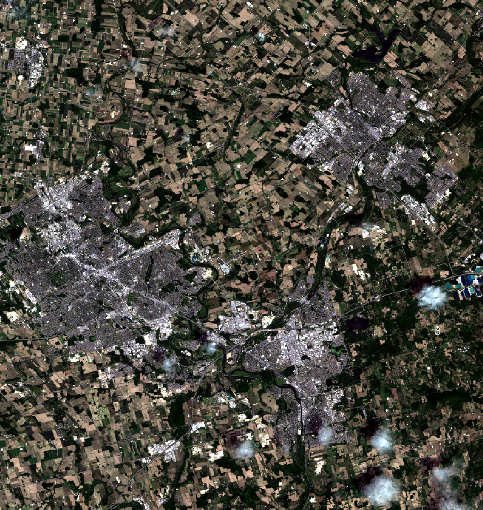

GEOG*3420 Remote Sensing of the Environment (W21)
Lab Assignment 3
Introduction
This lab exercise introduces students to two useful data transformation techniques used in remote sensing: the HSI transform and Principal Component Analysis (PCA). Additionally, we explore the use of spatial-domain filters for noise reduction (smoothing) and for edge-feature mapping.
Readings and Resources
The following materials, combined with your textbook, can be used as background materials and to help in answering the assignment questions.
Before you begin
IMPORTANT INFORMATION: You will need to download the data associated with this lab assignment from the GEOG*3420 CourseLink site. These data, as usual, are quite large and you will need to consider data storage solutions (e.g. a dedicated USB memory stick for the course).
What you need to hand in
You will hand in a printed report summarizing the answer to each of the questions in the following exercise along with the necessary colour images.
Part 1: HSI Transform
In Lab 2, we saw how various contrast stretches can be used to improve the contrast (i.e. image lightness) and thereby improve the colour-composite derived from three stretched images. In this part of Lab 3, you will be introduced to the HSI transform (also called IHS), which can be used, along with contrast stretching, to further refine the colour balance of colour images.
Readings: Tempfli et al. (2009). Chapter 5 Section 5.2 Visualization, Subsection IHS pg. 176-177.
The RGB-to-HSI transform takes three bands of imagery, or a red-green-blue (RGB) colour composite, as input and produces three transformed bands: hue, saturation, and intensity (HSI). Note, HSI is sometimes referred to as ISH or even HIS; Mather and Koch refer to this transform by the HSI convention, while WhiteboxTools uses ISH. Hue is related to the dominant wavelength of light and is perceived as the color associated with a pixel in a composite image. Saturation is the purity of a color. Colours become less pure as more white light is added, making them appear somewhat pastel. Intensity refers to the brightness, or lightness, of a color. There are several versions of the RGB-to-HSI transform, but one common convention results in HSI values within the following numerical ranges:
0 < H < 2PI
0 < S < 1
0 < I < 1
Hue is actually an angular quantity, and therefore its degree range takes 0 < H < 360.
Be sure to download the imagery data associated with this lab assignment into an appropriate directory. These data should contain a sub-region of a Landsat 8 scene, including seven bands (i.e. bands 1 through 7) of image data, for an area of Southern Ontario between Kitchener-Waterloo, Cambridge, and Guelph. The image was acquired June 21, 2016. To get a sense of the data, use WhiteboxTools' CreateColourComposite tool to create a 432 natural-colour RGB composite image. Using a Python script, this might look something like the following:
from WBT.whitebox_tools import WhiteboxTools
import os
wbt = WhiteboxTools()
# declare your working directory as a variable
wdir = "Your working directory here"
assert(os.path.isdir(wdir)
wbt.work_dir = wdir
print("Creating a colour composite...")
wbt.verbose = False # We don't need progress updates
wbt.create_colour_composite(
red="band4_clipped.tif",
green="band3_clipped.tif",
blue="band2_clipped.tif",
output="natural_colour.tif",
enhance=False
)
print("All done!")
It is important that you do not enhance the composite (enhance=False), which is not the default setting. Displaying the resulting image using your data visualization software of choice, you should find that it looks as follows:

Notice how dark, faded, and washed-out the colours in the image appear. The idea behind an HSI transform is simple. We can convert the three bands of data used to create this natural-colour composite image into the HSI colour space. We then perform a linear contrast stretch on the intensity (to brighten the image) and saturation (to make the image more colourful) bands and then perform the inverse transform (HSI-to-RGB) back into RGB colour space. When we perform contrast stretching directly on the RGB components, as we did in Lab 2, there is a good chance that the image colouring will be significantly altered, producing an unnatural appearance. By stretching only the intensity and saturation bands without altering the hue data, we will not be adjusting the colour values, only their colourfulness and lightness. In this way, we can ensure that the resulting enhanced image still looks natural after the adjustment.
So, let's do the adjustments and see if we can improve the colour-composite. Using VS Code, create a new Python script called hsi.py and copy the following script into the file:
from WBT.whitebox_tools import WhiteboxTools
wbt = WhiteboxTools()
wbt.work_dir = "/path/to/data/" # Update this
wbt.verbose = False # We don't need progress updates
# Transform the data into intensity-hue-satuation
print("Transform the data into intensity-hue-satuation...")
wbt.rgb_to_ihs(
red="band4_clipped.tif",
green="band3_clipped.tif",
blue="band2_clipped.tif",
intensity="intensity.tif",
hue="hue.tif",
saturation="saturation.tif"
)
# Perform a contrast stretch on the intensity band
print("Stretching the intensity band...")
wbt.percentage_contrast_stretch(
i="intensity.tif",
output="intensity_cs.tif",
clip=8.0,
tail="upper",
num_tones=1024
)
# The contrast stretched image has a value range from 0-1024 but we need it from 0-1
wbt.divide(
input1="intensity_cs.tif",
input2=1024.0,
output="intensity_rescaled.tif"
)
# Now, perform a contrast stretch on the saturation band
print("Stretching the saturation band...")
wbt.percentage_contrast_stretch(
i="saturation.tif",
output="saturation_cs.tif",
clip=0.75,
tail="upper",
num_tones=1024
)
# The contrast stretched image has a value range from 0-1024 but we need it from 0-1
wbt.divide(
input1="saturation_cs.tif",
input2=1024.0,
output="saturation_rescaled.tif"
)
# Transform the IHS data back into RGB, using the stretched intensity and saturation bands,
# and create a colour composite
print("Transform the IHS data back into RGB...")
wbt.verbose = False
wbt.ihs_to_rgb(
intensity="intensity_rescaled.tif",
hue="hue.tif",
saturation="saturation_rescaled.tif",
output="natural_colour_hsi.tif"
)
print("All done!")
Once the script has successfully run, open the resulting natural_colour_hsi.tif image using your data visualization software of choice.
1.1. Describe the impact that stretching the intensity and saturation bands had on the natural-colour composite image. Include a screenshot of the enhanced image with your final report. (3 marks)
1.2. How much did we clip the tails of the intensity and saturation bands by? What would be the impact of either raising or lowering the clip values? (2 marks)
Now experiment with adjusting each of the intensity and saturation stretch parameters (i.e. clip and tail values in the percentage_contrast_stretch function) to see if you can further refine the image quality.
Include the colour composite resulting from your best (most refined) transformation and also include the final stretch parameter values used to create the image. (3 marks)
The enhance optional parameter used in the CreateColourComposite tool performs an automated adjustment similar to the HSI-transform based stretch of the composite image. However, when we need more control over this adjustment, manually manipulating the HSI values as we have above is our best option.
1.3. Based on lectures and your readings, what is the main goal of image contrast stretching? (2 marks)
Part 2: Principal Component Analysis
This part of the lab exercise is designed to familiarize students with Principal Component Analysis (PCA) for multispectral imagery.
Readings: Esri, How Principal Components Work, ArcGIS Pro Help Documentation, available online (https://pro.arcgis.com/en/pro-app/latest/tool-reference/spatial-analyst/how-principal-components-works.htm).
Correlation Among Multispectral Images
Correlation is a statistical technique that is used to evaluate the degree of association between two variables. Correlation, usually designated by the Pearson r value, can be positive (indicating that as variable X increases in value variable Y also tends to increase) or negative (as X increases, Y tends to decrease in value). Correlation values vary from -1, indicating a strong negative association between variables, and 1, indicating a strong positive association. An r-value of 0 indicates that there is no statistical association between the two test variables.
Correlation provides a valuable tool for assessing the degree to which the brightness values in different bands of multispectral imagery are associated with one another. Use WhiteboxTools' ImageCorrelation tool to generate the correlation matrix for each of the bands of the K-W/Cambridge/Guelph Landsat 8 scene.
Include the correlation matrix with your final lab report (1 mark).
2.1. Using the generated correlation matrix identify any groups of images that exhibit strong correlation, i.e. r-values of 0.9 or greater and -0.9 or less? (3 marks)
2.2. Which of the seven bands is the most unique, i.e. does not exhibit a high degree of correlation with any other bands in the data set? (1 mark)
Principal Component Analysis (PCA)
It is important that you read the following preamble carefully.
While we may have seven bands of multispectral data in our test data set, the correlation analysis above shows that we do not have seven bands worth of information within the imagery. That is, correlation among the individual bands represents redundancy in the data set. As such, we should be able to use a data reduction technique to eliminate this redundancy and reduce the total number of images that need to be analyzed. For particularly intensive remote sensing analyses, this can be an important, or even necessary, step. For example, if we can use fewer band images to perform image classification, while still retaining the same amount of information in the data set, we will greatly improve the efficiency of the analysis.
PCA is one such data reduction technique that is widely used in remote sensing applications. PCA is used to reduce the number of band images necessary for classification (i.e. as a data reduction technique), for noise reduction, for change detection applications, and in many other areas. It is one of the most useful data transformations that we encounter in remote sensing.
As we've seen, any multi- or hyper-spectral imagery is likely to contain a substantial amount of redundancy owing to the correlation among the images. That is, the actual dimensionality of a multi-spectral data set is likely less than the number of bands. PCA transforms the original image data set into fewer, uncorrelated images. The technique works by transforming the axes (i.e. plural of axis) of the multispectral space (a 7-dimensional space in the case of our Landsat data) such that it coincides with the directions of greatest correlation. Each of these new axes are orthogonal (right angle) to one another.
Use WhiteboxTools' PrincipalComponentAnalysis tool to run a PCA on the Landsat data set. Input all seven available bands. Do not standardized the PCA. This is only done when the variances in your input images differ substantially, such as would be the case if they contained values that were recorded in different units (e.g. feet and meters). Each of our input images have the same bit depth so we do not need to standardize the analysis. We want to create all of the component images, i.e. num_comp=7.
You may run the PCA in a Python script (e.g. pca.py) that has been set up in the usual manner (i.e. importing WhiteboxTools, creating a wbt object, etc.), by using the following code:
from WBT.whitebox_tools import WhiteboxTools
import os
wbt = WhiteboxTools()
# declare your working directory as a variable
wdir = "Your working directory here"
assert(os.path.isdir(wdir)
wbt.work_dir = wdir
print("Performing PCA...")
wbt.verbose = True # We would like the PCA report to be automatically displayed
wbt.principal_component_analysis(
inputs="band1_clipped.tif;band2_clipped.tif;band3_clipped.tif;band4_clipped.tif;band5_clipped.tif;band6_clipped.tif;band7_clipped.tif",
output="pca_report.html",
num_comp=7,
standardized=False
)
Several outputs will be generated when the tool has completed. An HTML PCA report will be created and, hopefully, automatically displayed. This report contains useful data to help us interpret the results of the analysis. The first table that is in the PCA report lists the amount of explained variance (in non-cumulative and cumulative form), the eigenvalue, and the eigenvector for each component. Yikes, that's a lot of jargon that you're probably unfamiliar with! Okay, take a deep breath and let's look at it more closely. First of all, each of the seven components refer to the seven newly created, transformed images that we have created by running this tool. You can think of the amount of explained variance associated with each component as a measure of how much information content within the original multi-spectral data set that a component has. The higher this value is, the more important the component is. In fact, this same information is presented in graphical form in the Scree Plot that was also output when the tool completed.
Include the PCA report table and the scree plot in your final report (2 marks).
2.3. How does the amount of information, i.e. explained variance, vary by component number? (1 mark)
The eigenvalue is really just a related measure of information content and the eigenvector simply describes the mathematical transformation (rotation coordinates) that correspond to a particular component image. Neither of these two things are all that important for us now. They are necessary if you ever want to perform an inverse PCA, taking the components, or a subset of them, and transforming them back into the original coordinate system. This is sometimes a useful thing to do if you are using PCA for noise reduction applications.
Now then, you might have noticed something a bit strange about the results. I said previously that PCA is often used to reduce the number of images that we need to analyze (e.g. for image classification applications), but in fact the PCA has spat out seven new images. This is always the case; PCA will produce as many components as there are input images, unless you specify for it to create fewer (in this case, the images are still created, just not saved). The idea is that in data reduction applications the user is able to leave out several of the less important components from further analyses. Importantly, leaving out some components does not significantly affect the amount of information content in the overall data set. Is it just me or is that not a really nifty trick? I thought so too.
2.4. Based on the cumulative amount of explained variance, what is the actual dimensionality of this data set? How many, and which of the components would you need to include in any subsequent analysis to ensure that the vast majority of the information (variance) in the data set is not lost? (2 mark)
2.5. How would the shape of the scree-plot change if our original data set contained less correlation among images than we observed? That is, would the slope of the plot be steepened or flattened if there were less correlation in the data set and why? (2 marks)
Now it's time to take a look at the actual component images. Using your data visualization software of choice, display each of the component images generated by the PCA tool (i.e PCA_component1, PCA_component2, PCA_component3...).
2.6. Examine each of the seven PCA component images carefully. Prepare a table in which you describe each component with respect to the scene/landscape characteristics that are included. For example, which component(s) contain information about water depth, atmospheric haze, vegetation, image noise, etc. You will be graded based on the level of detail you provide. (7 marks)
Now examine the Factor Loadings table within the PCA text report. These loadings values describe the correlation (i.e. r values) between each of the PCA components (table columns) and the original seven Landsat band images (table rows). These values tell you how the information contained in an image is spread among the PCA components. An analysis of factor loadings can be reveal very useful information about the data set. For example, it can help you to identify groups of similar images.
2.7. Do the factor loadings reveal any natural groupings of similar images? If so, identify the groupings. (2 marks)
You may recall that near the start of this section I said that PCA transforms the original image data set into a set of uncorrelated images.
You will want to run the ImageCorrelation tool on the seven PCA components to confirm that this is the case and include the correlation results in your final report (1 mark).
PCA is one heck of a nifty trick, isn't it?
Creating a PCA Composite Image
By creating a colour-composite image of the first three PCA components (i.e PCA_component1, PCA_component2, PCA_component3), we are able to create a colour image that contains almost the same amount of information as the entire original data set of seven bands. Similarly, a colour composite of three of the higher PCA components (i.e PCA_component5, PCA_component6, PCA_component7), allows us to exam the noise parts of the data set. Use the following script to generate these two colour-composite images.
from WBT.whitebox_tools import WhiteboxTools
wbt = WhiteboxTools()
wbt.work_dir = "/path/to/data/" # Update this
wbt.verbose = False # We don't need the progress to be updated for each operation.
# First, perform contrast stretches on the individual PCA components
for band_num in range(1, 8):
print("Performing stretch on component {}".format(band_num))
in_file = "PCA_component{}.tif".format(
band_num)
out_file = "PCA_component{}_cs.tif".format(
band_num)
wbt.percentage_contrast_stretch(
i=in_file, output=out_file, clip=5.0, num_tones=1024)
print("Creating colour composites...")
# PCA1-PCA2-PCA3 RGB
wbt.create_colour_composite(
red="PCA_component1_cs.tif",
green="PCA_component2_cs.tif",
blue="PCA_component3_cs.tif",
output="PCA123RGB.tif",
enhance=False,
)
# PCA5-PCA6-PCA7 RGB
wbt.create_colour_composite(
red="PCA_component5_cs.tif",
green="PCA_component6_cs.tif",
blue="PCA_component7_cs.tif",
output="PCA567RGB.tif",
enhance=False,
)
print("All done!")
Once the script has completed, display PCA123RGB.tif and PCA567RGB.tif in the data visualization software.
Include screenshots of these two images with your final Lab report (2 marks).
2.8. What colours are the various common land-covers in the scene, including pavement (urban), bare soil, crop cover, forest, and water, displayed with in the 'signal-component' image (
PCA123RGB.tif)? Hint: it may help to look at your enhanced natural-colour composite image to pick out sites with these various land-covers. (5 marks)2.9. Examining the noise-component image (
PCA567RGB.tif), describe the relative noise content within urban vs rural areas within the scene. (2 marks)
Part 3: Image Filtering
WhiteboxTools offers numerous tools for filtering image data in the spatial domain. Most of these filters can be grouped into some of the more common types based on their functionality:
-
Low-pass filters: These filters emphasize low-frequency, longer-range signals in the image and de-emphasize high-frequency, short-scale variations. They work to smooth the image and to reduce apparent noise. Examples of common low-pass filters include MeanFilter, GaussianFilter, and MedianFilter.
-
Edge-preserving low-pass filters: Like other low-pass filters, this class of filters also aims to smooth images by emphasizing longer-range variation in the image. However, these filters also work to preserve the crispness of edges in the original image. Common examples include BilateralFilter, and EdgePreservingMeanFilter.
-
High-pass filters: The opposite of a low-pass filter, these filters emphasize short-scale variation and de-emphasize longer-range signals. These tools are typically used to sharpen an image. The UnsharpMasking tool is a good example (despite its contrary name).
-
Band-pass filters: These filters are used to isolate the variation in an image that lies between a lower and upper bound of specified ranges. The DiffOfGaussianFilter is a good example of this type of filter.
-
Edge-detection filters: These filters are used to isolate the edge features within an image. Common examples include the SobelFilter and RobertsCrossFilter
Readings: Tempfli et al. (2009). Chapter 5 Section 5.4.3 Filter operations pg. 198-203.
Image Smoothing and Noise Reduction
You may recall from the previous section that PCA is sometimes used to remove noise from multi-spectral image datasets. Low-pass and edge-preserving low-pass filters similarly are used for reducing the occurrence of noise within images, although, unlike PCA, these operations are carried out on a single band (or the individual RGB components). Many satellite images contains substantial speckle, i.e. white noise. Speckle refers to a high-frequency, short-spatial scale variation among neighouring pixels. To enhance the image and to improve its information content, it is necessary to remove this speckle. This is sometimes useful prior to image classification and other mapping applications where it can be good to reduce the within-patch variability (e.g. tonal variation, or texture, within agricultural fields) and to maximize the between-patch tonal distinctions (e.g. the differences between adjoining agricultural fields).
Apply a 5 × 5 mean filter to the natural_colour_hsi.tif image created in Part 1 using WhiteboxTools' MeanFilter tool. To do so, we'll need to split this RGB composite image apart into its individual components, using the SplitColourComposite and then add them back together after the filtering operation.
Notice that the code in the script below will not work as is. It contains a bug and you will need to be able to identify it and fix it before you can run it. Debugging code is a major part of learning how to program. It involves interpreting error messages and various other skills (e.g. inserting print statements to help you determine where the program is failing).
from WBT.whitebox_tools import WhiteboxTools
import os
wbt = WhiteboxTools()
# declare your working directory as a variable
wdir = "Your working directory here"
assert(os.path.isdir(wdir)
wbt.work_dir = wdir
wbt.verbose = False
print("Break the image apart into its RGB components...")
# This will create three images: split_component_r.tif, split_component_g.tif, split_component_b.tif
# See help documentation for more details
wbt.split_colour_composite(
i="natural_colour_hsi.tif",
output="split_component.tif"
)
print("Filtering the component images...")
filter_size = 5
# Mean filter
wbt.mean_filter(
i="split_component_r.tif",
output="temp1.tif",
filterx=filter_size,
filtery=filter_size
)
wbt.mean_filter(
i="split_component_g.tif",
output="temp2.tif",
filterx=filter_size,
filtery=filter_size
)
wbt.mean_filter(
i="split_component_b.tif",
output="temp3.tif",
filterx=filter_size,
filtery=filter_size
)
print("Create a new composite...")
wbt.create_colour_composite(
red="temp1.tif",
green="temp2.tif",
blue="temp3.tif",
output="nat_clr_5x5mean.tif",
enhance=False
)
print("All done!")
Once the script has successfully run, open the resulting nat_clr_5x5mean.tif image using the data visualization software and compare it to the original natural_colour_hsi.tif image.
3.1 What was the bug in the script above? Briefly describe the process that you used to identify and rectify it. (2 mark)
3.2. Describe the impact of the mean filter on the image? How does the filter impact the variation of tone (texture) with the larger land-cover patches (e.g. fields)? How does it impact the edges between patches as well as other linear features, such as roads? (5 mark)
One of the key characteristics of all spatial filters used in image processing is the kernel size, i.e. the size of the roving window. Modify the script so that it applies a 7 × 7 mean filter and compare the output to that of the 5 × 5 (be sure to change the output file name when you modify the script or you will overwrite the first filtered image).
3.3. What was the impact of increasing the filter size? Why might you need to increase or decrease the window size of a filter? (3 mark)
Modify the script again, this time change the filter tool to perform a 7 × 7 MedianFilter (be sure to look at the help documentation description of tool parameters; use sig_digits=0) and a 7 × 7 EdgePreservingMeanFilter (use parameters threshold=40 and filter=7).
3.4. How do the median and edge-preserving mean filters compare, with respect to their ability to smooth patches while preserving edges and linear features, to the earlier 7 × 7 mean filter? (4 marks)
Edge Detection
Spatial convolution filters can be used for many common image processing tasks other than noise reduction. One common task is edge-detection, which is often used during automated mapping operations. Apply a 3 × 3 Sobel edge-detection filter to the natural_colour_hsi.tif image using the following script:
from WBT.whitebox_tools import WhiteboxTools
wbt = WhiteboxTools()
wbt.work_dir = "/path/to/data/" # Update this
wbt.verbose = False
wbt.sobel_filter(
i="natural_colour_hsi.tif",
output="sobel.tif",
variant="3x3",
clip=1.0
)
Notice, that unlike the previous filters, there is no need to split the input colour composite image apart before applying the Sobel filter. This tool will work well with the RGB composite input image. When the script has successfully completed, display the resulting image using your data visualization software.
Include a screenshot of the Sobel image with your Lab report (1 mark).
3.5. How well does the filter work to highlight edges between adjacent land-use patches and linear features? (2 mark)
Modify the script above to run using the EdgePreservingMeanFilter colour composite image created in the previous lab part as the input image.
Include your modified script with your Lab report (1 mark).
3.6. To what extent does the use of a previously filtered image improve the detection of edge and linear features in the image? (2 mark)
Typically, one would threshold the Sobel image (i.e. find all pixels greater than a threshold value) and then apply a line thinning method to further refine the mapped edges. But let's leave that for another day!